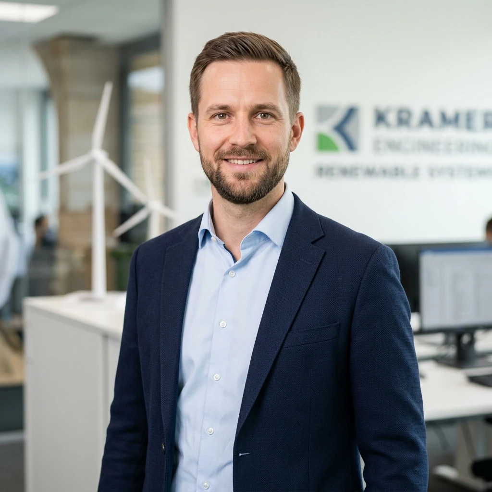

Senior E-Commerce & Backend Developer · Shopware 6, PHP 8 & Symfony · Pimcore & APIs
Senior Backend & E-Commerce Developer with 5+ years of experience building complex shop architectures and enterprise integrations. Deep expertise in custom Shopware 6 plugin development (DAL, Flow Builder, Scheduled Tasks), Symfony, PHP 8+, and Pimcore PIM/ERP synchronization. Proven track record in high-concurrency database modeling, Redis caching, Docker, and automated CI/CD pipelines. 100% remote resident in Germany.
May 2020 – Present
Apr 2024 – Present
Jul 2021 – Mar 2024
Master of Science (M.Sc.) in Mechanical Engineering · University of Stuttgart - Final Grade: 1.4 (With Distinction)
10/2018 – 09/2020 (2 years · 4 semesters)Specialization in Energy Technology, Computational Fluid Dynamics (CFD), Structural Mechanics (FEM), and Renewable Energy Systems.
Bachelor of Science (B.Sc.) in Mechanical Engineering · University of Stuttgart - Final Grade: 1.7 (With Merit)
10/2014 – 09/2018 (4 years · 8 semesters)Core foundations in Technical Mechanics, Thermodynamics, Materials Science, Machine Elements, and CAD Design.